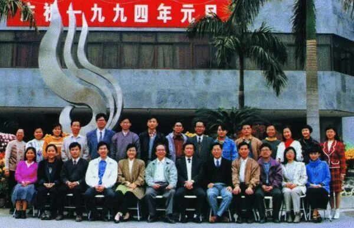
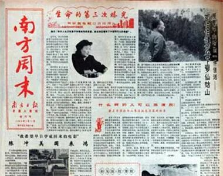
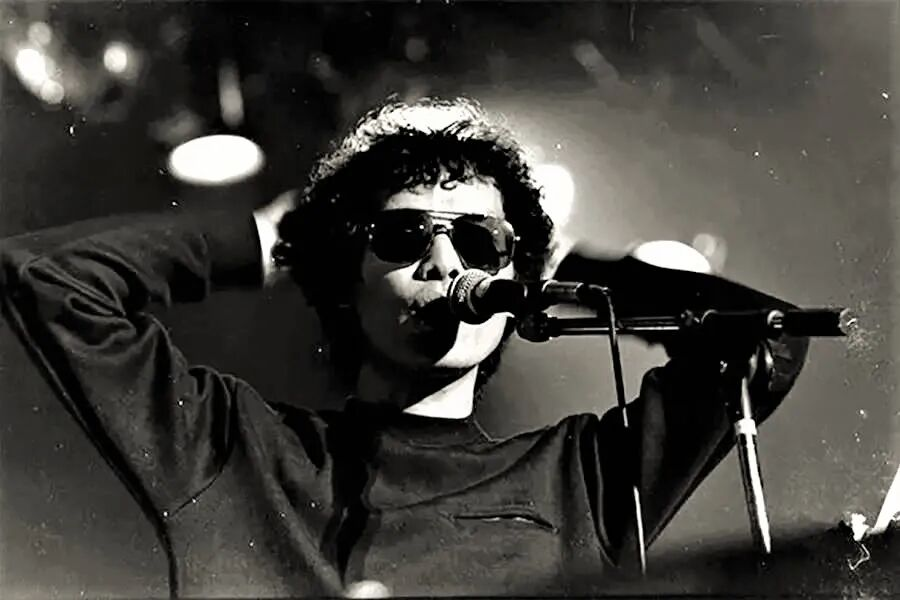
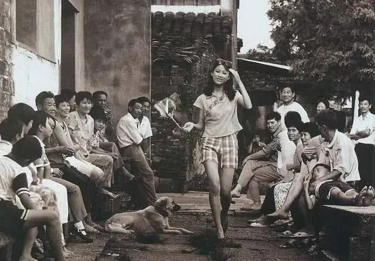

再见保尔：左方和他的《南方周末》时代
别名：再见《南方周末》| 1984，他们要去创造一个时代
时间：2014.08.17
作者：刘洋硕
来源：搜狐网

《南方周末》十周年时的编辑部合影
广州的夜空里，“南方周末”的巨大霓虹像一座雕塑，在湿润的空气里微微闪烁。曾经，在一代人心中，这四个字意味着中国知识分子的脊梁和良心。
80岁的左方先生已经很久没回过广州大道中289号大院了。在这个被视为新闻的圣殿里，老老少少都称他老左。和传承几代人的自由氛围一样，从他创办《南方周末》的那天起，这传统延续了30年。
老左————这两个字本身就仿佛是一时代的痕迹。朝鲜战争他当过兵，“文化革命”他造过反，但谁又会想到，知天命之年，他又会在这个国家的改革巨浪中摇旗呐喊，创办了一份后来被视为自由派的报纸。
“我把启蒙视作办报的灵魂。”广州的某一天，他在咖啡馆里坐下，用了6个小时为我们讲述一张报纸的历史，讲述一段他心中那个“保尔·柯察金”如何消失的故事。耄耋之年，左方依旧睿智。不久前，他还刚刚在香港出版了自己的口述历史。书名叫作《钢铁是怎么炼不成的》——是他人生的反思，也是对旧时代的隐喻。
相比这份报纸后来的辉煌，很少有人再提起左方时代的《南方周末》。但在改革最关键的30年里，这份报纸的前半程却承载着更多意义。从左方开始，很多人都曾影响过这份报纸的性格形成。他们的故事，关于一张报纸，关于一场改革，关于一个国家，也关于一个时代。

1984年，《南方周末》创刊号
生于1984
1984年，他们要去创造一个时代。
1984年的广州，城市还显得有些无趣。一个叫张向春的年轻夹报工人坐在《南方日报》社资料室里。如果不出意外，他的整个白天都将与那些旧报纸为伴————那些千篇一律的“真理报”，将是他千篇一律的日子。
有时候，他也会偷偷将自己的画压在资料室的玻璃台板下，那是他对抗千篇一律的方式。谁会想到，多年以后，这个年轻人的版式设计和插画，将一度成为《南方周末》在市场上大杀四方的利器。
在文革结束后，资料室就成了报社的“冷宫”。屋子里的老员工，大都是在“文革”犯错误的“三种人”（造反起家的人、帮派思想严重的人和打砸抢分子）。他们中最著名的造反派正是“左方”。如今，他已经在这里呆了六年时间。
动乱后挂在报社大院的两行大标语，似乎可以对左方的前半生做个总结——“左方是广东多股帮派势力的黑高参，大乱南方日报的挂帅人物”。
是的，他，左方，是造反派“新闻兵”的头头————一个可以呼风唤雨般调动十万人上街的“革命青年”。当然，后来，他同样被用“文革”的方式扣上“帽子”，赶下台。
这个造反派，这个报社，这个国家……一切内心的坚固，都将在1984年烟消云散。那一天，左方50岁了。这个大名鼎鼎的“造反派头头”突然告诉张向春：“走，我们去办一张报纸！”
年轻人未曾想到：1984年，他们要去创造一个时代。
在英国人乔治·奥威尔的笔下，1984是个充满专制隐喻的年份。不过当这一年真的到来，1984并未走向《1984》，世界也并未如奥威尔描写那般令人恐惧。
1984年，中国，改革的气息在元旦后不久就散发出来————坐镇北京的邓小平突然决定到南方看看。他一路沉默不语，直到回到广州，才写下这样一段后来影响整个中国的话：“深圳的发展和经验证明，我们建立经济特区的政策是正确的”。
在整个1980年代，敢为天下之先的广东，都是国家开放的标尺。邓丽君、喇叭裤、寻呼机……甚至内地第一个赴港旅行团都是从广州起行。1984年，一位香港老太太兴奋地拉着大陆游客的手说：邓小平应该长命百岁。
在离开资料室的这一天之前，左方悄悄去了火车站，那时候，中国的改革已经开始从农村转向城市。他看到潮水一般的民工涌入广东————“一场经济的大革命正在产生……不管怎样，他们不会再是原来的那些人了。”
那时候，报纸上还没人敢记录日子的改变，也没有人敢谈那些“真理”之外的东西。最终，是《南方日报》老社长丁希凌力排众议，要办一张与党报不同的报纸。
老社长丁希凌将《南方周末》视为“《南方日报》改革发展的试验田”。总编辑不愿派人办报，他就去找“被打入冷宫”的左方————一个在政治上已经“靠边站”的人。
几十年后，你会发现，这样的历史桥段似乎只可能在《南方日报》这样的大院里出现。与中国其他党报不同的是，《南方周末》的前身是香港《华商报》，即使经历文革，仍保留着文人办报的传统。
在1984年，中国的新闻改革方兴未艾。很少有人记得，《中国妇女》杂志在那一年，首次刊登了两则征婚启事。这个举动微乎其微，在当时却是一个坚定的信号————甚至，它和《南方周末》的创办一样，还意味着中国的媒体将独自面对读者，面向市场。
市场的力量充斥着整个1984年。
张瑞敏、柳传志、王石、李经纬、牟其中开始了创业……日后很多驰骋一时的公司均诞生在这一年。财经作家吴晓波将之称为中国的“公司元年”。
在改革前沿的广东，1984同样是《南方周末》的创业元年，也是广东的媒体市场化元年。左方和几个编辑挤进一进办公室，“为改革摇旗呐喊”。
许多年后，左方对搜狐网自豪地讲起第一期的《南方周末》：他们大胆用演员黄宗英下海经商的新闻当做头条————“表达对敢为天下先的赞颂”；第二条才是邓小平到珠海视察，去爬罗姑山——“表达对改革开放总设计师的敬重”。
那一年，年轻人最流行的一句话是：我们都下海吧！
创刊初期的左方
左方向右
左方和陈兆川，造反派和老右派，
就像同一条暗渠在不同的历史缝隙间喷涌。
许多年后，一位美国记者问了左方这样一个问题：“你的新闻经历有15年是在毛泽东时期，有15年是在邓小平时期————我想知道在这两个截然不同的阶段你的表现……”
左方的答案是：“在毛泽东时代，我拥护毛泽东文艺思想、批判‘文艺黑线’、宣传样板戏；在邓小平时代，我为改革开放摇旗呐喊，就是你熟悉的《南方周末》……”
美国人显然无法理解他在两个时代的“分裂”。左方却觉得美国人“不理解我们这一代中国人”。
“左方”，“老左”——这个名字似乎已经隐喻了这代人的命运。他本叫黄克骥，抗美援朝时，这个十五岁的家中独子不惜断绝母子关系弃学从军。他为自己改了新名字：左方。
他成了一个狂热的左翼青年，满脑子革命理想，又弃武从文进入《南方日报》。他在后来的“文革”中如鱼得水，成为呼风唤雨的造反派领袖，甚至夺了省委机关报《南方日报》的权。
左方曾对《南方周末》的年轻人讲起他在航校学习的某个夜晚——他望着满天星空，心潮澎湃，血液里是布尔什维克的雄心壮志。
以50岁为界，两个时代呈现了两个左方：一个是追随毛泽东主义的革命小将；一个是倡导改革开放的自由报人。似乎每个形象，他都如此顺应时代——然而，这样的人生，该用理想主义还是功利主义去定义？
1989年，南方日报社的第三个研究生徐列，被优先分配到《南方周末》。生于1963、学于80年代，他一度想不明白：为什么造反派左方成了报社的头头儿。
“我想‘文革’中的三种人可能都是投机取巧——那时候对人的判断完全一种政治解读。到后来，我才发现他们这代人身上有很强的一个倾向：如果57年他在，他就是一个右派；到了文革的时候，他就是个造反派；也许到了改革开放，他是一个改革派。”
在这一代人的命运中，左方的老同事陈兆川似乎是左方的另一面。因为在“大鸣大放”中向报社领导提了三条意见，1957年“反右”，陈兆川被扣上了“向党放了三支毒箭”的帽子。在历次残酷的政治运动中，他又成了红卫兵们的专政对象。
1984年，《南方周末》组成了筹备三人小组，陈兆川是其中之一——那些年，人们戏称造就《南方周末》的，是“一个造反派，两个老右派”。
只是那时候，陈兆川仍不常说话，走路轻轻的，仿佛内心仍然留存着恐惧。陈兆川后来告诉搜狐网：大鸣大放的年代，他们也是心中充满了理想主义，真的希望去改变世界。
徐列开始理解这些前辈：“造反派和右派，想想是两个概念是吧？实际上他们是一个概念，不要理解文革的造反派都是为了什么阴谋，为了夺权……你看看文革所谓造反派们，都是心中充满正义理想的，都是以为要跟着毛泽东去干大事的人……”
无论向左还是向右，徐列都将它们归结于“理想主义”——一个时代留给那一代知识分子的共同痕迹。后来，他主持的杂志采访了金庸，标题就是《八十金庸：拒绝理想主义》。因为金庸同样认为：如果一个人把理想作为理想主义强加于人，就是专制主义。
几十年后，坐在广州的咖啡馆里，左方对于自己的描述似乎更加形象，他说：他和陈兆川——造反派和老右派，就像地下流淌的同一条暗渠，只是他们在不同的历史缝隙间喷涌而出。
左方年轻时有两个偶像：一个是保尔·柯察金，第二个是约翰·克里斯托弗。那也是两个自己，一个代表着他的革命，另一个代表着他的人性。
在动乱的年代，支配他行动的是保尔·柯察金，潜伏在他内心的是却约翰·克里斯托夫。那时候，他时常用保尔来批判心中另一个自己。直到资料室的6年，他心中的约翰·克里斯托夫终于回来了。
“这是时代所然，还是性格所然。我究竟是个成功者还是个失败者，要留给后人去评说。”
美国记者当然无法理解一个人的转变为何如此自然。几十年后，左方想起的却是，1984年广州火车站的人声鼎沸——“我听到了板块的断裂和撞击声。我觉得中国的现代化进程再也不需要革命和暴力，而是经济发展和对民众的启蒙。”
创办《南方周末》后，他请《文汇报》驻广州的记者来写在改革开放广州，写观念意识的变化。他支持编辑徐列去写“皮尔卡丹进广州”，写西方文明如何进入中国。
经历了大起大落的左方，花了几十年的功夫终于明白：他追随的神像背后究竟隐藏着什么样的形象。好在，如今，斗争已经结束；好在，他战胜了自己。

娱乐突围
“新闻事业要推进，第一步要走进市场，
有了市场就有了竞争。
竞争本身就推动新闻的发展，
扩大新闻的自由度。”
在口述史的发布会上，左方曾给当下中国的新闻人三句寄语：保持理想不妥协；适应形势无需硬顶；绝不同流合污。这些话像极了1968年巴黎左翼学生印在胸前的那句：“让我们忠于理想，让我们面对现实。”
在另一些老同事看来，经历过文革的左方，却更像个“现实主义”者。即使在那个变革的时代，他提出的口号也是“不举旗”。
相比后来，当年的《南方周末》也显得有些“现实”——报纸头条一度充斥着影星、歌星。在改革初兴的1980年代初，这是最先进入人们视野的文化产物。
那时候，陈兆川去济南采访中国电影百花奖，回到广州写了一篇《邂逅明星》。“左方把它放在一版头条。他很高兴地告诉我，今天的报纸多卖了几千份。”
在那一代的文人看来，娱乐却是另一种打破禁区的方式。在左方的记忆里，中国开放的标志并非经济特区的建立，而是70年代末的一个除夕夜。当时广东电视台和香港无线电视台合办了一场《欢乐今宵》，一批香港艺人出现在了内地的电视银幕上——“这不是一个文艺现象，而是个强烈的政治信号”。
1983年的“清除精神污染”运动，并未能阻止流行文化在中国的土地上蔓延。历史的潮流始终是无法阻挡的，“白天老邓，晚上小邓”成了开放的标志。
左方说：“我们就把香港和台湾的歌星都介绍进来，这大概就是《南方周末》最早的追求——认为周末色彩就是娱乐性的。”
一些后来的媒体人也许觉得：左方时代的《南方周末》只不过是张文艺小报。但在左方和陈兆川看来，在刚刚开放的年代，他们正是在一步步突破旧时代的禁区。
这一代经历过“文革”的中国文人们，将“娱乐化”和“市场化”视为媒体的出路，也视为他们打破禁区的方式。《南方周末》创办的十年后，湖南台老台长魏文彬开始了他“娱乐湘军”时代的试验。他说：“我们应该把媒体作为一个产业来看……产业是商品，只有变成商品的时候，它才是市场经济。”
同样的情形，也发生在央视的春晚。在春晚最火红的年代，观众们发现，这台晚会不再担负说教的任务，陈佩斯的经典小品《吃面条》，没有任何政治色彩，可以让人开怀大笑。在文化领域，去意识形态化的所有尝试，在当时都意味着重大的变革。
不过，在一贯带着强烈的意识形态色彩的传媒业，这样的观点并非没有政治风险。
就像左方后来所说：“当时登了‘三星’（演艺明星、体育明星、明星艺术家）是多了些，有人据此认为《南方周末》这个时期是一张没有社会价值的文化娱乐小报。其实当时在一版头条登‘三星’也需要胆识和勇气，因为当时报界将这种做法视为离经叛道。”
在共和国的传媒史上，左方这一代文人打破了《真理报》模式，也实现了报纸从宣传属性恢复到商品属性，实现了编辑部的官僚本位回归市场本位。当然，市场也给了他们丰厚的回报——《南方周末》迅速盈利。
左方说：“新闻自由不是想要就要得到的，但新闻事业要推进，我认为第一步要走进市场，有了市场就有了竞争。竞争本身就推动新闻的发展，扩大新闻的自由度。”

一切为了生存
左方那一次很生气：
“既能够说出我们要说的话，同时又能生存下去。”
对于后人给予左方时代的否定，当年的年轻人张向春坐在《南方周末》的办公室里，表达着他的不满：“如果有人说早期的《南方周末》是个低俗文化小报，责任应该算在我头上。”
在左方时代，他是头版的美术编辑——红唇、美腿贯穿版面的设计，是他独步江湖的武器。
对于版面的改变，出于左方的另一种“妥协”。《南方周末》创刊半年的时候，就出现了一场危机，广州街头突然出现了许多品味底下的庸俗小报。这些由几位广西作家编来赚钱的报纸，充斥着“宫廷秘闻”“江青秘史”之类的低俗故事。人们称他们：“百万大山土匪下山”。
当时的《南方周末》主编关振东生了气，他提出改版与他们竞争。老编辑陈兆川是第一个反对者：“我们办报纸连拿回家给孩子看都不敢，就不要办了！”内容不能与小报看齐，但版面设计却可以与小报一争高下。张向春记得，当时左方让他跑到地摊学习小报板式，另辟蹊径。
左方当时曾说过这么一句：《南方周末》的发行量一半靠向春。那时候的报刊地摊，最好卖的报纸会被摊主挂在电线杆上。很长时间，《南方周末》都占据着电线杆的显著位置——圈里甚至流传着张向春如何一笔线条，就让发行上个十来万份的神话。
“一切为了生存。”左方曾在口述史中如此提及初办《南方周末》时的种种：
他们为了养活报纸，搞过装饰杂志，办过“音乐茶座”，为药厂登过连环画广告——甚至，左方还想过筹办选美。美编张向春说：那时候的《南方周末》才真的超前、真的叫多种经营。
面对市场竞争，面对生存压力，面对话语空间，左方身上常常会表现出他现实的一面——那是他在几十年政治运动中学会的“妥协”——即便如今，他也仍然反对年轻人的“激进”。他说：“不要去做烈士，做烈士最容易。”
《亚洲周刊》的记者曾在报道里描写过左方的一次愤怒。那是一次报纸出刊后的周会，年轻记者们对许多报道不能刊登非常愤慨。“他们非常激烈，说与其这样，那么不用怕报纸被砍头，反正就像割了韭菜一样，割了一茬还有一茬”。
“老左那一次很生气，他说，这个报纸不是我们自己的，我们每个人都有责任去爱护这份报纸——既能够说出我们要说的话，同时又能生存下去。”
生存，一直是左方考虑的问题。《南方周末》创刊的第3年，彩票、洋快餐、大哥大……改革渗透在城市人的生活里，《南方周末》赖以为生的明星新闻不再是吸引读者的唯一话题。“现实”再一次摆在左方和编辑部面前：未来，这份报纸该如何生存下去。
《南方日报》老社长黄文俞
重启“启蒙”
已宣布绝笔的黄文俞给《南方周末》写一封信：
可以有不说出来的真话。但绝对不能讲假话。
在1980年代，很多人和很多事都有意无意造就了后来的《南方周末》。1987年秋的这一天，左方去见老社长黄文俞——一个在“文革”年代被左方们打倒的人。
在动乱之前，黄文俞是广东的报坛泰斗，东江纵队的老战士，《羊城晚报》的创办者。那一次，黄文俞告诉左方，新闻改革就是要打破“苏联的《真理报》模式”，打破“根据红头文件办报”、打破“只对领导负责”、打破“假、大、空”。
作为更早一代的知识分子，黄文俞讲起30年前他奉命创办《羊城晚报》的故事。当时中共广东省委第一书记陶铸曾放下一句狠话：“如果办成《南方日报》就不要办了。”
1957年，黄文俞找来解放前就办过报纸的“右派”邬为梓。这位老编辑偷偷拿出解放前和香港的报纸，提出要“新闻主攻、副刊主守”，要“敢碰新闻，敢抢新闻”。
30年后，黄文俞对左方说：“你左方不是去探索什么新路，你就是倒回到原来的新闻传统上面去，我办《羊城晚报》就是一次跟中国原有的新闻传统的秘密接轨。但是你现在可以公开接轨了。”
1980年代，更多的新思潮得以公开出现在中国知识界。在这个中国人思想斗争最为激烈的时代，保守与改革争论不休，黄文俞给左方指明的方向却是一条“老路”：回到1930年代的新闻传统，回到五四运动的民主启蒙。
也正是80年代，李泽厚提出“五四”后中国的“救亡压倒启蒙”——他说，革命和救亡运动不仅没有继续推进文化启蒙，传统的旧意识形态却改头换面悄悄渗入，最终造就了“文革”。而启蒙就是要回到“五四”之前。
那时候，中国知识分子开始重新思考国家的命运。已经宣布绝笔的黄文俞破例给《南方周末》写了一封信。他在这封信里面写下一句厚重的话：“可以有不说出来的真话，但绝对不能讲假话。”——直到许多年后，这句话仍影响着《南方周末》，甚至仍影响着几代南方报人。
在那次谈话后，左方和他的编辑部有了新的方向：“我整个新闻思想明确了好多。这样《南方周末》从启蒙和为改革开放鸣锣开道的追求，转为逐步突破真理报的潜规则，把进行新闻改革作为重点了。这是我们办报的追求，从1988年开始一个很大的转变。”
1988年，创始人之一的陈兆川退休了。退休前，他和左方拉着编辑部的年轻人，到番禺滴水岩苗圃场开了三天“小字辈”会议。在那次会上，大家提出将《南方周末》办成一张有全国影响的综合性大型周末报，向社会性转变。
那时候，《南方周末》的头版发表社会特写《一位女研究生被拐卖始末》；《文革十年史》也得以连载刊登——那是文革结束以来，大陆公开探讨文革史的开山之作。
当然在更年轻的中国文人看来，当时《南方周末》的“社会转型”仍带有旧时代的局限。1988年的“滴水延会议”，刚入报社两年的谭军波最为年轻，他如今只记得：“（当时对于社会性）只是提一下而已，没有真正的落到实处。”
几十年后，左方再次讲起创办《南方周末》时的初衷：“启蒙不能停留在学术圈子内，必须面向民众，启蒙不能止于学理研究，而是贵在行动。”
接下来的下一句话，似乎更代表左方自己：“启蒙要和政治保持一定的距离，但启蒙也不能脱离政治。”只是，一年后的春天，《南方周末》预想的改革还是被政治打乱了。
春天故事
邓小平南巡这一年，陈兆川找到左方：
“我们广东要开风气之先。”
像中国很多的报纸一样，《南方周末》陷入了两年的低潮。直到1991年的春天，邓小平坐上了南下的火车。他的列车行驶在一片沉寂的大地，这情形有些像在13年前。
这一次，他要到上海看看。
上海市委机关报《解放日报》首先传出了重启改革的强音。“皇甫平”四篇讨论改革的文章，立即引发一场“改革姓资姓社”的论战，也最终导致了邓小平的南巡讲话。
那一年的广州，已经退休返聘的“老右派“陈兆川找到左方：“我们广东要开风气之先。现在，可以搞（社会性改革）了。”
1991年，《南方周末》决定从4个版扩充到8个版。其中副主编游雁凌负责的《人与法》版面开始涉足社会报道和法学普及。在谭军波看来，这位左方的接班人是“《南方周末》转型期最为关键的人”。
年轻编委徐列负责的版面则被老左命名为《芳草地》。虽然听起来有些文学副刊的味道，但对于当时苦于无处发稿的北京文人，这里却成了他们最后的阵地。
当时左方的策略是：“让敏感的人写不敏感的文章，让不敏感的人写敏感的文章”。于是，那时候的《南方周末》已经不再是个文化娱乐小报，而开始带有杂文家们强烈的社会批判意识。李泽厚、邵燕祥、牧惠……甚至连前文化部长王蒙都在这里开设专栏。
1992年，广东文人预先感受到了不一样的气息：中国的改革进程在人们不经意间重新开启。1992年的某一天，编辑卢昆从深圳回来找到左方：“老左，邓小平可能今天或者明天要去深圳视察”。他在深圳国贸大厦下楼时看到大厅里的服务员拿着花在演习——“邓伯伯好，邓伯伯好”。
1992年的历史果然是从这一天开始的。1月19日，邓小平出现在深圳。他说：“改革开放胆子要大一些，敢于试验，不能像小脚女人一样。”尽管那天天气微寒，但人们后来提到邓小平的这次南行，都说那是一个“春天的故事”。
对于文人来说，当年的媒体环境同样是一个春天。也正是那一年，已经升任《南方日报》文艺部副主任的徐列，出人意料的选择了“自我降格”，卸下了很多人羡慕不已的职务，回到了《南方周末》。党报的文化让他难以适应。
后来的《南方周末》主编江艺平曾如此描写当年的“南周”文化：“当时《南方周末》的记者编辑们见到主编副主编，不称“某总”，直呼其名；普通员工可以和老总拍桌子辩论，哪怕到脸红脖子粗的程度……”
直到2004年，当年书生意气的徐列离开了编辑部，开始带领一群年轻人，创办《南方人物周刊》，传承老南周“人文、宽容、平等”的基因。深居云南的前《南方周末》记者尹鸿伟，对这本杂志的评价是：“为‘老南周’留下了火种”。
1984年，《南方周末》创刊号
停刊风波
时任省委书记谢非决定保全这份报纸：“报纸不能停”。
“打破《真理报》模式的潜规则”——这是左方对自己在《南方周末》报史上功绩的总结。但接下来的问题是：新秩序又该如何重建？
在新闻专业主义真正驾临之前，中国文人们还没有答案。《南方周末》和中国传媒的发展史，都曾走过一段曲折的弯路。
1990年代初，“大特写”式报告文学开始风靡。这种中国作家独创的文体，常常用小说的文学手法描写社会问题——他们用“A省、B市”来描绘一个模糊的地点，报道的主人公也使用化名。甚至，有些作家会饶有兴致地在稿件中杜撰。
《南方周末》的第一位专职记者朱德付曾如此评价那时的报纸：“长篇连载、大特写、张向春的版式，在很长的历史岁月里，一直是《南方周末》混迹江湖的三大法宝。这三大法宝是左方时代《南方周末》最大的财富，当然也是最大的软肋。”
1993年7月30日，一篇江西铁路局作家杜撰的《袭警案》，让《南方周末》陷入了面临停刊的窘境。文章用小说的笔法杜撰了“三省交界的B市”，一对夫妻因婚后不育，物色一位出租车调度员“借种”，最终遭遇两名治安民警的敲诈勒索的故事。在故事的结尾，三人合谋报复杀死民警一家。
文章刊出后，公安部一位副部长想将案件立为“反面典型”。编辑部在询问作者时，才知道案件为作者虚构。因为这则假新闻，公安部最终告到中宣部。
当主管部门要求报社“停刊整顿”的时候，《南方周末》的发行量刚刚突破100万。若非身处广州，后来的《南方周末》可能再也无法在新闻史上留下厚重一笔。
左方做好了被免职的准备。他对当时主管《南方周末》的社委李孟昱和《南方周末》副主编游雁凌说：“你们一个是《南方日报》的接班人，一个是《南方周末》的接班人，而我还有一年多就退休了，责任全包到我身上……就算我这次逃过一劫，今后也是在劫难逃，难道我们三个人抱在一起跳楼。”
那年的社庆活动上，广东省人大常委会主任林若听说了《南方周末》要被停刊的消息，为了保护这张报纸，他把电话打给了时任广东省委副书记黄华华。林若曾是省委书记，也曾是位南方报人。1992年那辆影响中国的列车驶向深圳，正是他等在终点站，迎接邓小平。
时任广东省委书记谢非也决定保全这份报纸：“我认为《南方周末》是张好报，对《南方周末》编辑部怎么处理都可以，但报纸不能停”。当时流传着这样一种说法：广东的一些老领导甚至把停不停《南方周末》看成是改革派与反改革派的斗争。
“对我们最有利是省委的领导，他们是一种开放、包容的态度。《南方日报》从起来到发展壮大和省委有很大的关系。”当时还是社委的李孟昱说。几年后，他升任《南方日报》社长，开启了南方报业集团化改革的“李范时代”（范指《南方日报》总编辑范以锦）——《南方都市报》转为日报实现盈利，《21世纪经济报道》创刊并迅速崛起。
“办好一张报纸，第一是选好总编辑，第二就是要定位准确，第三就是要爱惜人才。”许多年后，李孟昱坐在南方报业的大楼里，回忆当年他作为新闻官时的岁月：“作为我，包括左方在内，我们是比较传统的……我们在处理问题上，都是维护党的原则，这个是大前提。但是为什么有一些问题，在别人看来是打擦边球？在我们看来这其实不是打擦边球，还是因为广东这种开放的环境。”
1997年，邓小平逝世后的《南方周末》
289号大院里的圣徒
江艺平当时的答案是：这张报纸已经完成了它启蒙的使命。
1995年对于《南方周末》来说，是个重要的节点。从这一年开始，一批批成长于80年代的年轻人，怀揣理想走进广州大道中289号《南方日报》大院——后来一位南方记者称他们是：“广州大道289号的圣徒”。
为了筹备第二次扩版，方迎忠成为了《南方周末》第一位摄影记者。在决定加盟之前，记者组组长朱德付的一句话触动了他：“你想想，全中国的新闻你只要感兴趣，立刻就可以坐飞机去！”那时候，原报社的同事也曾摆了七桌酒席劝方迎忠留下，但他依然决定“投奔敌刊”——他说：“我可以用柯达胶卷！”
有一句话其实说得并不为过——《南方周末》开启了中国新闻人最有尊严的时代——无论这尊严指得是物质生活还是职业荣誉。左方时代为《南方周末》日后辉煌打下的经济基础是：在广州记者平均工资停留在800元的时候，《南方周末》的记者每月已经能拿到3000元底薪。
在左方退居二线的时候，《南方周末》旗下已经集结了一批60年代出生的大学毕业生：陈微尘、谭军波、徐列、朱德付、谭庭浩、沈灏、陈朝华……再到后来的方迎忠、郭国松、李晖、刘洲伟、陈菊红、陈明洋……这些更年轻的年轻人，也为这份报纸带来更新的东西，也最终重建了前辈们未能完成的新秩序。
这群成长于80年代年轻人，与他们的前辈不同，新闻的光荣与梦想是他们的共同基因。年轻人设想的《南方周末》，是一张有时政、经济、社会、文化，几个板块组成的新闻周报。这或许与文艺副刊出身的左方设想并不相同。
在左方的继任者游雁凌任职副主编和主编的期间，《南方周末》的发行从三四十万冲破百万，而报纸的新闻性也开始加强——经历了《袭警案》的风波，当时的年轻人决心要做真正的深度报道。
1995年，是个中国媒体的转折年。一场“周末报”大战正在如火如荼的上演。同样出于改革的尝试，一份名叫《粤港信息报》的报纸创办《粤港周末》，率先举起了新闻周报的大旗。《中国青年报》“冰点”特稿版也在这一年创刊。
对于游雁凌在报纸改革中的贡献，后来成为媒体掌门的朱德付曾如此描述：“《南方周末》实现真正的转型，成就今天的江湖地位，老游（游雁凌）功不可没。只是因为很多特殊的原因，大家都选择性地遗忘了他而已。”
“在《南方周末》的历史上，游雁凌影响了一代人。”说这话的谭军波，后来成为了中国最著名的报纸发行人。20年后，他在《东莞时报》总编辑任上依然坚守——成了 “一个在大斜坡上推石头的人”。
在游雁凌离开后，《南方周末》迎来了充满人文情怀的主编江艺平。一批中国最优秀的新闻记者聚集在一起，而江艺平的人格魅力也足以使得这份报纸成为“新闻界的黄埔军校”。
当时的编辑沈灏继续推动了《南方周末》的新闻化。那时候，国内新闻界专业化的萌芽让北大才子沈颢有了天马行空的挥洒空间。他负责的试验特刊顺利出刊。
监督性报道开始让《南方周末》赢得“知识分子的良心”的美誉，也开始让这份报纸经历更多的磨难。对于年轻人推动的“大案要案”改革，左方是有所保留的。他有时候会觉得，年轻人并不像他们一样明白“妥协”。但在一个全新的时代，他还是会让年轻人放手去做。
60年代毕业的老报人、60年代出生的大学生，代际的隔阂并未阻隔两代人共同的精神血脉。左方说：“《南方周末》是我栽的树，但是在江艺平手里开花结果。”而在当年，江艺平愿意接任主编职位的条件，则是左方必须接受返聘，陪她“一起跨世纪”。
1997年和1998年，一个时代结束了。提出“一个国家，两种制度”的邓小平，没能踏上香港的土地。创办《南方周末》的左方，也没能陪这份报纸跨世纪。不过，在左方退休后，另一个“让无力者有力，让悲观者前行”的时代却仍在继续——南方报人们如今仍然自豪地称它“江艺平时代”。
创办了《南方周末》的左方，如今谈起报纸比当年更加掷地有声：“（办报）最重要的要有政治家的胸怀——当领导表扬你的时候，你不要沾沾自喜，无非是你发出的某个文章，适应了这个时期政治形势的需要。当领导批评你的时候，你不要紧张，可能你受批评的文章，正是未来中国历史上最有价值的文章。只有这种胸怀才是真正报人的最高境界。
创造了“南周”鼎盛时期的江艺平，离开了《南方周末》，最终也告别了南方大院。在她退休前的2013年，一位年轻记者曾在春节的那场风波后，问过江艺平该如何看待这份报纸如今遭受的非议——“如何看待当年被这张报纸启蒙过的人，现在开始反对它的启蒙话语”。
据说，江艺平当时的答案是：这张报纸已经完成了它启蒙的使命，如今需要的是与时俱进。
从1984到2014年——中国改革巨变的30年里，《南方周末》依然曾是一幅知识分子的精神图腾。而《南方周末》的一代代报人，也正像一株株蒲公英，随风飘散，落地生根，薪火相传。
旧时代“保尔”的神像再也不会回来了。或许我们该用曾经的《南方周末》编辑沈灏的诗，来结束这一代人和这30年的故事：